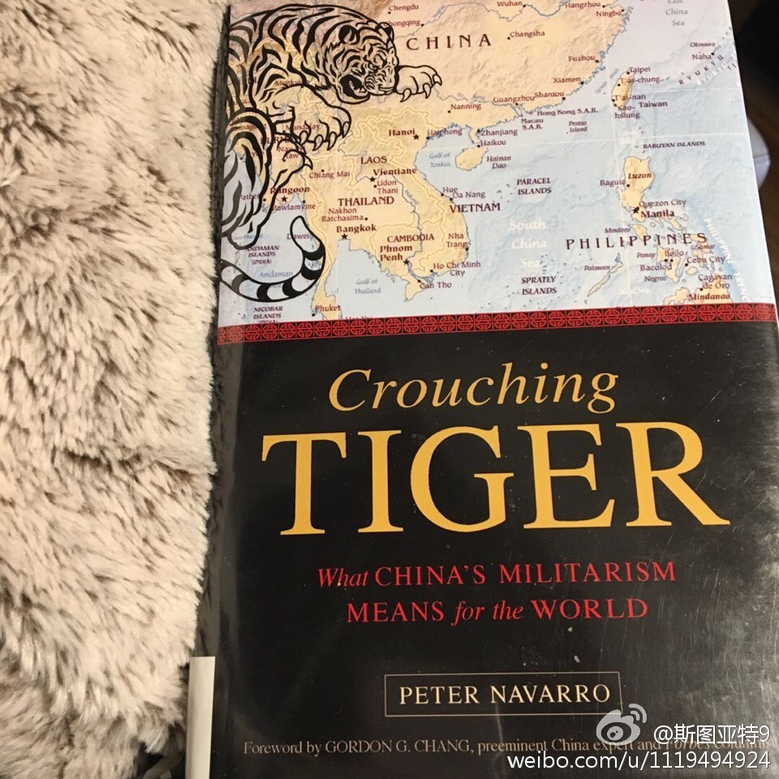

前一段时间特朗普认命了对华鹰派Peter Navarro为贸易顾问。我终于借来了他最近的一本书《Crouching Tiger》，今天迅速翻了翻。感觉还是个十几年前中国威胁论的陈词滥调。大意如下：第一部分讲中国有和美国一战的动机，因为中国有百年屈辱史对保护主权非常敏感，且贸易路线受美国压制且潜在制裁，而中国是一个希望改变现状的国家；第二部分讲中国的军事实力，中国军费虽然不如美国但人力便宜所以力量不差，最近的反舰导弹、战略导弹、战略核打击能力、新的航母（虽然多数是标志性的）、歼20、太空战、网军、心理媒体法律战等，有极强的打击能力；第三部分讲很多因素可以触发中美冲突：台湾问题、朝鲜局势、东海主权、南海问题、中越冲突、中印问题、转移内部矛盾或处理内部问题的需要，中俄也可能出问题（作者认为俄罗斯长远更可能也更应该和美国结盟对抗中国）；第四部分讲中美一战更可能是什么样的，结论是更可能是耗时长久的局部战争，两败俱伤；第五部分讲什么策略是没用的：作者认为新孤立主义是没用的（特朗普怎么想啊？），经贸联系也没用，核威慑策略也不会避免局部战争；第六部分讲作者的主张，作者主张军事强硬，加强对华战略压制，减少对华贸易赤字，加强对亚洲盟友的关系联合起来压制中国，最后号召美国内部团结起来，抛弃亲中国的观点，统一思想对付中国。如果特朗普真的按照他的建议形势，那奥巴马-特朗普交接，就将会是克林顿-小布什交界的翻版。小布什上台后将中国定位战略竞争对手，摆开架子搞中国了。那次中国运气很好，突然出现了9.11，让布什不得不将战略中心放到中东。这次可未必有这么好运了。真不知道会怎样。
- 